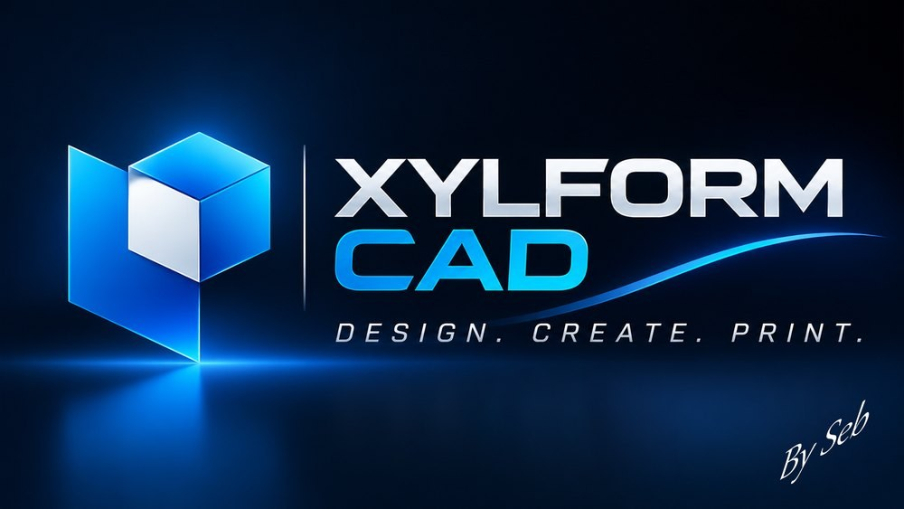
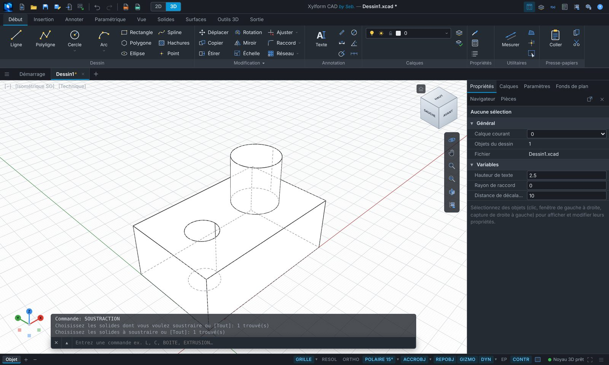
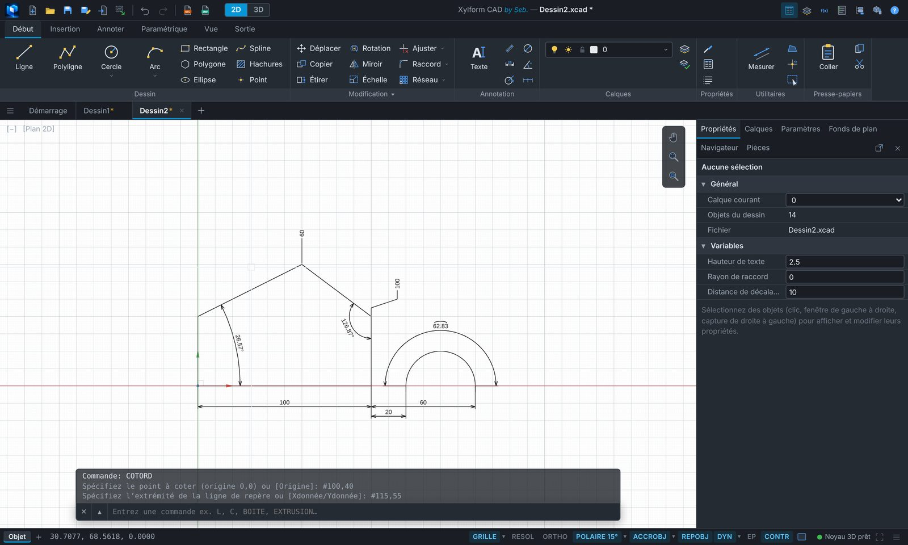
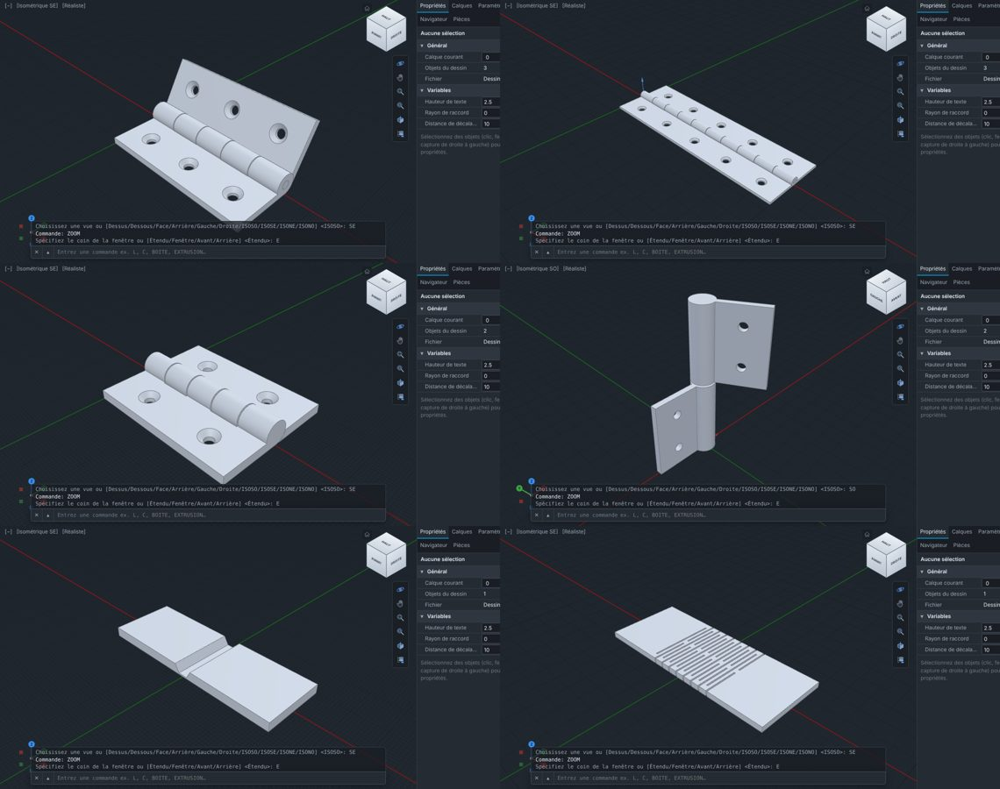
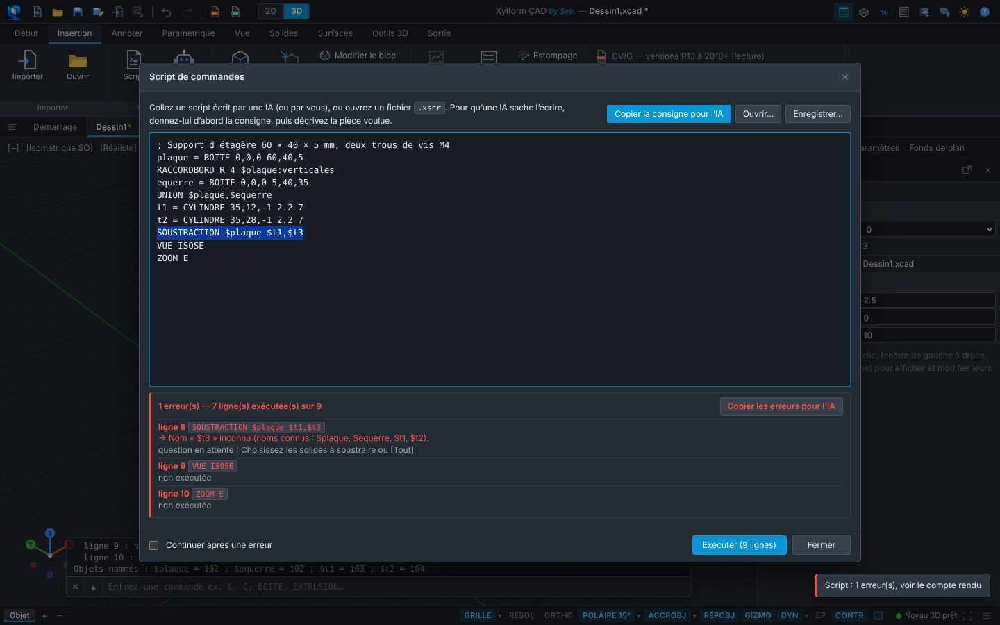

Xylform CAD 1.3.0
22 novembre 2026
Faites dessiner vos pièces par une IA, avec des scripts de commandes ou directement par la connexion IA (serveur MCP).

Dessinez en 2D, modélisez des pièces en volume et exportez-les en STL ou 3MF prêtes à imprimer. Un vrai noyau géométrique, une ligne de commande, un ruban et des outils pensés pour les makers.
Tout ce qu'il faut pour passer d'une idée à une pièce imprimée.
Lignes, polylignes, arcs, splines, hachures, accrochages aux objets, saisie dynamique au curseur, contraintes et cotes pilotées.
Noyau B-rep OpenCascade : extrusion, révolution, balayage, lissage, booléens exacts, congés, chanfreins, coques, perçages.
Export STL et 3MF étanches, contrôle d'imprimabilité avant export, compensation des trous, jeu de filetage réglable.
Vis et écrous à filetage réel, taraudages, charnières imprimables, raccords PVC, plaquette de calibration.
Styles de cote, tolérances, vues en coupe et de détail, nomenclature, export PDF et SVG.
Lecture DWG, lecture et écriture DXF et STEP, import STL/3MF, fonds de plan DWG, DXF, PDF et images.
Scripts de commandes faciles à écrire par une IA, et connexion directe d'un assistant compatible MCP.
La version installée se met à jour toute seule et présente les nouveautés après chaque mise à jour.
Interface sombre, ruban par onglets, ligne de commande et palettes ancrables.




Les dernières versions, lues directement dans le journal des versions du projet.
Faites dessiner vos pièces par une IA, avec des scripts de commandes ou directement par la connexion IA (serveur MCP).
Gratuit, sans compte, sans publicité.
Raccourcis Bureau et menu Démarrer, ouverture des dessins .xcad par double-clic, mise à jour automatique.
Télécharger l'installateurSe lance sans installation, depuis une clé USB par exemple. Elle signale les nouvelles versions.
Télécharger la version portableLogiciel libre sous licence MIT. Il se lance aussi dans le navigateur depuis le code source.
Voir le dépôt GitHub